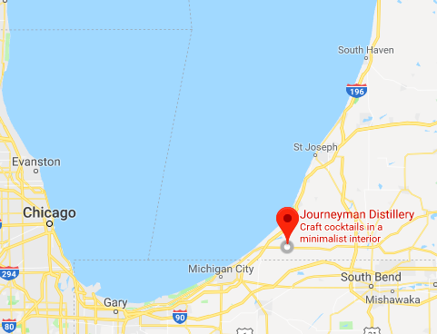
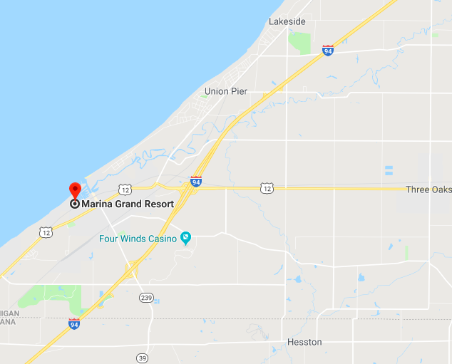

Event Details
We're getting married in Three Oaks, Michigan, and we couldn't be more thrilled to celebrate with all of you, our nearest and dearest!
Michigan is very special to both of us. We first met at Zingerman's Deli in Ann Arbor back in 2010 and made a home there for four wonderful years. We've lived, worked, and vacationed all over the state, especially this little corner of the Mitten, called Harbor Country.
This state has brought us immeasurable joy and beauty throughout our relationship, so when it came time to pick the place for our wedding, there was no contest.
The ceremony and reception will both take place at Journeyman Distillery, and some wonderful locals will be helping us put everything together.
The wedding will be indoors in late summer, so we recommend comfortable, formal attire.
Schedule of Events
| event | time | location | details |
|---|---|---|---|
| Welcome Drinks | 8/178:30p-11p | Journeyman Distillery(The Grainery) | Come start the weekend off right with a cocktail at Journeyman. We'd love to see you and hang out before the main event. |
| Ceremony | 8/184p-4:30p | Journeyman Distillery(Warren Hall) | Our ceremony (officiated by our fathers, Steve LaKind and Jonathan Mays) will begin at 4p in Warren Hall, on the second floor of the distillery. |
| Reception | 8/184:30p-12a | Journeyman Distillery(Warren Hall) | Be sure to bring your dancing shoes and big appetites! We'll be relaxing with a cocktail hour before dinner, and we're so excited to dance our way to midnight! |
| Farewell Brunch | 8/199a-12p | Marina Grand Resort | The last hurrah of the weekend and a chance to share a nosh and some coffee before everybody heads home. Open house so feel free to swing by anytime. |
Getting Here
For directions to Journeyman Distillery, click on the map below and select your point of origin.
For directions to Marina Grand Resort, click on the map below and select your point of origin.
Out of State Travelers
If you're flying in from out of state, we recommend arriving in Chicago (O'Hare or Midway), Detroit, or Grand Rapids. Flight prices vary, but Chicago is nearest to Three Oaks, so choose whichever is best for you.
If you are staying in town for the weekend, check out these local hotels and home rental companies for nearby housing options.
Hotels
The Harbor Grand
Marina Grand
Four Winds Casino Resort
Fairfield Inn & Suites
Home Rentals
Airbnb
Light Harbor Rentals
Yellow Bird Vacation Rentals
RSVP Rentals
Enjoying Your Stay
Whistle Stop
Stop here for a morning coffee, pastry and the paper. Don’t forget to check out their beautifully curated specialty food selection as well.
Oink's Dutch Treat
You can’t come to SW Michigan without going to Oinks. Delicious ice cream, and the entire store is decked out in more pig paraphernalia than you could imagine. A local institution not to be missed.
Greenbush Brewing
Excellent brewery in the tiny town of Sawyer. Fun place to hang when you’re in need of some good libations.
Sawyer Garden Center
One of our favorite places to spend an afternoon. The local produce selection is to die for, especially during the summer. Their wine and beer section is equally impressive and a great place to try out some authentic Michigan products.
Beach It Up
The best thing to do in the summertime here. All of these public beaches are beautiful! We particularly love New Buffalo Beach, Union Pier Beach and Townline Road Beach.
Warren Dunes
A true Michigan experience and childhood favorite of Maddie’s. Also a killer calf workout climbing up this nearly 260ft tall dune formation.
Bike Rides
Harbor Country bike trails are perfect this time of year. Check out these routes for a real taste of Michigan summer.
Captain Mike's Fun Park
Every activity you loved as a kid in one place: go-carts, mini golf, batting cages, bounce houses and old school arcade games.
Wine Tastings
Surprisingly, SW Michigan has a thriving wine industry. Tastings and tours are a great way to spend an afternoon.